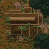
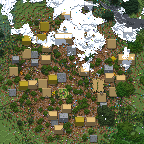
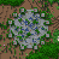
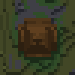
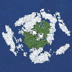
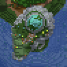
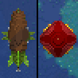
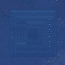
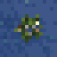

Custom Map

Blazespawner
Der Blazespawner befindet sich beim Vulkan.
Witherskelettspawner
Es gibt zwölf Witherskelettspawner, die sich in (fast) jedem Biom befinden, meistens entweder zentral oder sehr exponiert
Anwesen

- Eisen
- Gold
- Emeralds
- Lapislazuli
- Diamanten
- Netherite Ingots
- Health Tonic
- Stoneskin Tonic
- Tonic of the Water
- Tonic of true Strength
- Ward Armor Trim
- Vex Armor Trim
- Silence Armor Trim
- Gentle Tools (Chance: 5%)
Dorf (Spawn)

Auszüge aus dem Loot Table:
- Brot
- gebratenes Schweinefleisch
- Äpfel
- Lederrüstung
- Kettenrüstung
- Eisentools
Dschungeltempel

Auszüge aus dem Loot Table:
- Eisen
- Gold
- Emeralds
- Diamanten
- Sättel
- Pferderüstungen
- Wild Armor Trim
Hexenhütte

- Witherrosen
- Health Tonic
- Stoneskin Tonic
- Tonic of the Water
- Tonic of true Strength
- Lava-Proof Stew
- Lucky Stew
- Stew of Regeneration
Himmelsinsel

Auszüge aus dem Loot Table:
- Phantommembranen
- Gold
- Emeralds
- Diamanten
- Mending Buch
- Unbreaking 1-3 Buch
- Feather Falling 1-4 Buch
- Eye Armor Trim
- Infrangible Elytra (Chance: 5%)
Leuchtturm

- Eisen
- Gold
- Emeralds
- Diamanten
- Goat Horns
- Sentry Armor Trim
- Truly Infinite Bow (Chance: 5%)
Luftschiff

Auszüge aus dem Loot Table:
- Eisen
- Gold
- Emeralds
- Diamanten
- Sniffer Eggs
- Wayfinder Armor Trim
- Raiser Armor Trim
- Shaper Armor Trim
- Host Armor Trim
- Dune Armor Trim
- Infrangible Elytra (Chance: 5%)
Ozeanmonument

Auszüge aus dem Loot Table:
- Eisen
- Gold
- Emeralds
- Lapislazuli
- Diamanten
- Goldäpfel
- Tide Armor Trim
- Fast & Fascinating Fork (Chance: 5%)
Treibholz

Auszüge aus dem Loot Table:
- Eisen
- Heart of the Sea
- Nautilus Shells
- Coast Armor Trim
- Fast & Fascinating Fork (Chance: 5%)